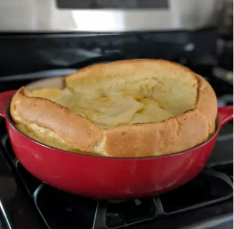

Seattle Dutch baby

A rich popover pancake served with melted butter, powder sugar, lemon wedges or fresh fruit. A dish that's well known in Seattle, Washington.
Ingredients
- ¾ cup all-purpose flour
- ¾ cup milk
- 1 pinch salt
- 3 eggs, beaten
- 2 tablespoons butter, melted
Step
- Preheat oven to 375 degrees F (190 degrees C). Lightly grease a 9 inch pie or cake pan.
- In a large bowl, mix together flour, milk, eggs butter and salt. Stir until smooth. Pour batter into prepared pan.
- Bake in preheated oven for 10 minutes. Reduce heat to 325 degrees cooking for additional 5 minutes. Serve immediately.
- 3 eggs, beaten
- 2 tablespoons butter, melted